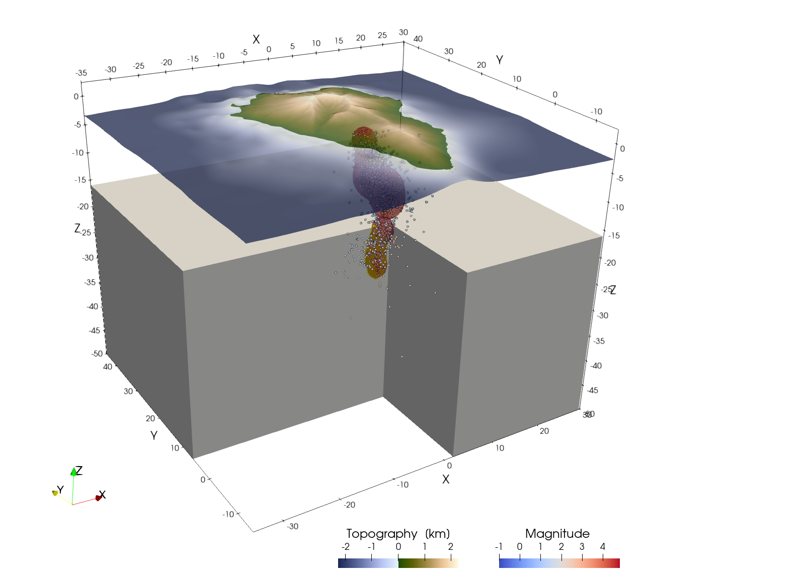

Create a Cartesian Model Setup for La Palma
Aim
In this tutorial, your will learn how to use real data to create a geodynamic model setup in CartData. We will use the data of the Cumbre Viejo eruption in La Palma, which is a volcanic island that erupted from mid september 2021 - december 2021. The seimsicity from that time-period is used as an inspiration to set the locations of magma intrusions
1. Load data
We will use two types of data to create the model
- Topography
- Earthquake locations
We start with loading the required packages, which includes GMT to download topography (an optional dependency for GeophysicalModelGenerator)
using GeophysicalModelGenerator, GMT, DelimitedFilesWe will use GMT to download the topography with:
Topo = import_topo(lon = [-18.2, -17.5], lat=[28.4, 29.0], file="@earth_relief_15s")Next, lets load the seismicity. The earthquake data is available on https://www.ign.es/web/ign/portal/vlc-catalogo. We have filtered them and prepared a file with earthquake locations up to early November 2021 (from january 2021). Download that:
#download_data("https://zenodo.org/records/10738510/files/EQ_events_all_info5_LaPalma_2021.dat","EQ_events_all_info5_LaPalma_2021.dat")
data_EQ = readdlm("EQ_events_all_info5_LaPalma_2021.dat")It has the following format:
lon = data_EQ[:,1]
lat = data_EQ[:,2]
depth = -data_EQ[:,3]
Mag = data_EQ[:,10]Create a GeoData structure from this:
data_all_EQ = GeoData(lon,lat,depth, (Magnitude=Mag,))Next, we can write the data to paraview along with the topography. Note that we have to specify that we have PointData:
write_paraview(data_all_EQ,"data_all_EQ",PointsData=true)
write_paraview(Topo,"Topo") Note that this data is in geographic coordinates, which makes it non-trivial to create slices through the data (see coordinate axis in the plot, where
Note that this data is in geographic coordinates, which makes it non-trivial to create slices through the data (see coordinate axis in the plot, where z is not pointing upwards).
2. Convert data to Cartesian coordinates
In order to create model setups, it is helpful to first transfer the data to Cartesian. This requires us to first determine a projection point, that is fixed. Often, it is helpful to use the center of the topography for this. In the present example, we will center the model around La Palma itself:
proj = ProjectionPoint(Lon=-17.84, Lat=28.56)Once this is done you can convert the topographic data to the Cartesian reference frame
EQ_cart = convert2CartData(data_all_EQ, proj);
Topo_cart = convert2CartData(Topo, proj)It is important to realize that the Cartesian coordinates of the topographic grid is no longer strictly orthogonal after this conversion. You don't notice that in the current example, as the model domain is rather small. In other cases, however, this is quite substantial (e.g., India-Asia collision zone). LaMEM needs an orthogonal grid of topography, which we can create with:
Topo_model = CartData(xyz_grid(-35:.1:30,-15:.2:45,0));
nothing #hideIn a next step, the routine project_CartData projects a GeoData structure to a CartData struct
Topo_model = project_CartData(Topo_model, Topo, proj)Let's have a look at the data:
write_paraview(EQ_cart,"EQ_cart",PointsData=true)
write_paraview(Topo_model,"Topo_model")3. Create a volumetric earthquake plot
It is useful to plot the earthquake density in 3D, which indicates where most action is happening in the system. For this, we first create a 3D grid of the region:
Grid_3D = CartData(xyz_grid(-35:.3:30,-15:.25:45,-50:.5:5))Next we check how many earthquakes are around the grid points:
Grid_3D =point_to_nearest_grid(EQ_cart, Grid_3D, radius_factor=3)And we can define an array with rock types:
Phases = zeros(Int64,size(Grid_3D.x))Points that are below the surface are set to one:
Below = below_surface(Grid_3D, Topo_model);
Phases[Below] .= 1Lets assume that the crust is 15 km thick
Phases[NumValue(Grid_3D.z) .< -15] .= 2And lets assume that the magma is where we have some earthquake activity:
ind = findall( (Grid_3D.fields.Count .> 75) .&& Phases.>0)
Phases[ind] .= 3 #MagmaAdd rocktypes to the grid:
Grid_3D = addfield(Grid_3D,"Phases",Phases)We can save this to paraview format
write_paraview(Grid_3D,"Grid_3D")The paraview statefile /tutorials/LaPalma.pvsm can be used to reproduce the following plot: 
This page was generated using Literate.jl.